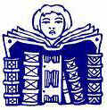

"The Narcissus attitude of regarding the extensions of our own bodies as really out there and really independent of us…"
 |
| What's he mean when he says we become numbed to the bias of print media? |
"The Greek myth of Narcissus is directly concerned with a fact of human experience, as the word Narcissus indicates. It is from the Greek word narcosis or numbness. The youth Narcissus mistook his own reflection in the water for another person. This extension of himself by mirror numbed his perceptions until he became the servomechanism of his own extended or repeated image. The nymph Echo tried to win his love with fragments of his own speech, but in vain. He was numb. He had adapted to his extension of himself and had become a closed system.
"Now the point of this myth is the fact that men at once become fascinated by any extension of themselves in any material other than themselves…" (Chapter 4, Understanding Media)